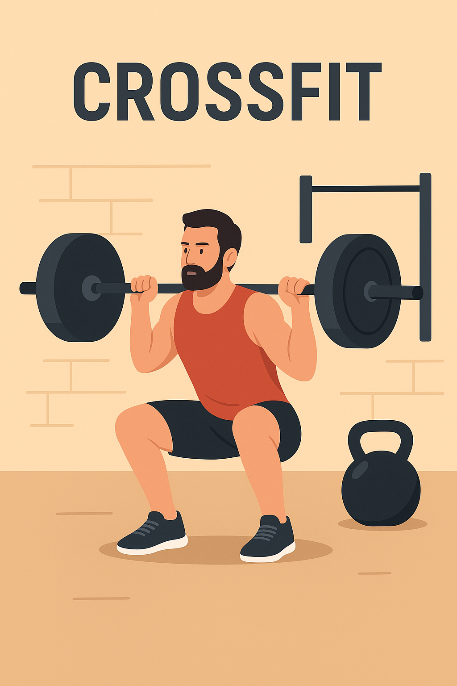
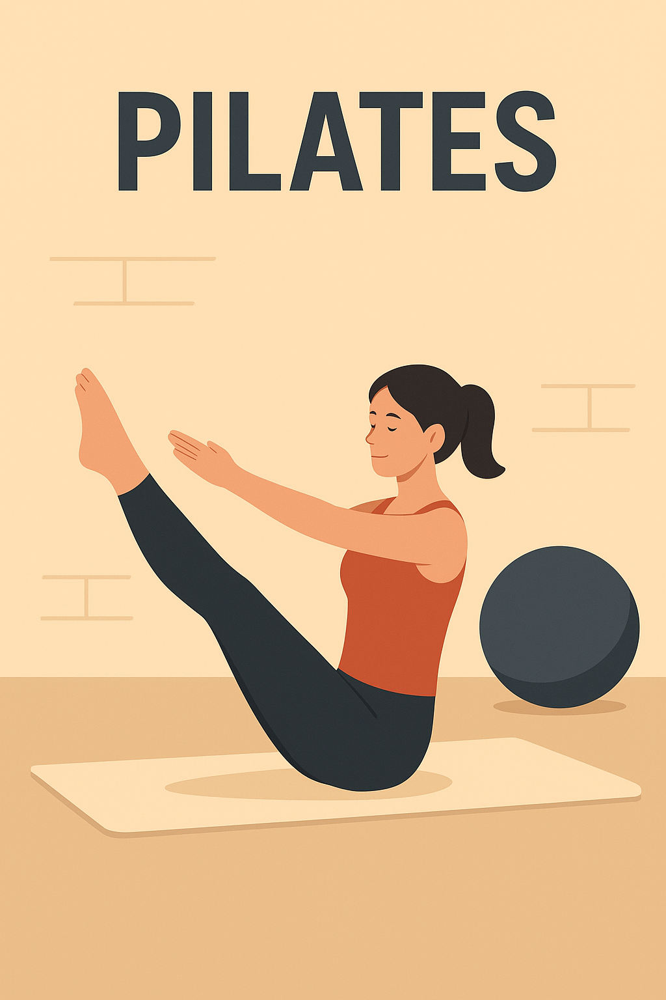
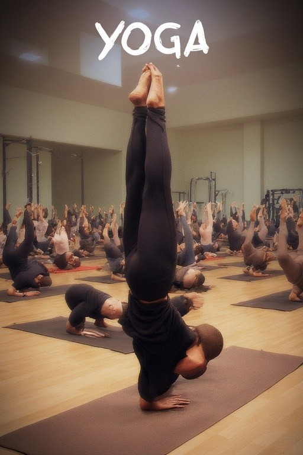
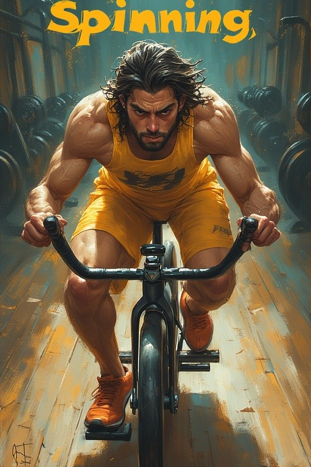
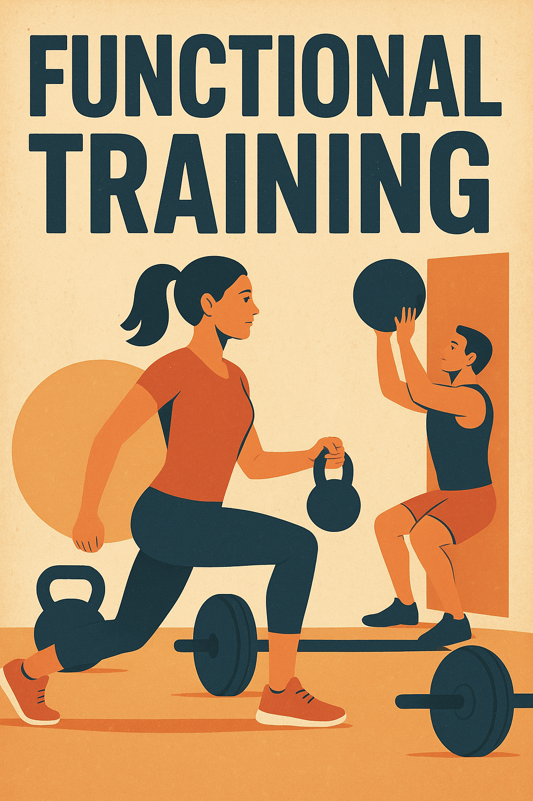
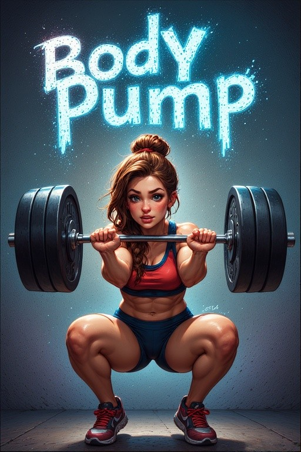

Allenamento che stimola il sistema cardiovascolare, come corsa, cyclette o step. Migliora resistenza e salute del cuore.
Serie di esercizi diversi eseguiti uno dopo l’altro con brevi pause. Aiuta a tonificare e a bruciare calorie in poco tempo.
Zona centrale del corpo (addome, schiena e bacino). Rinforzarlo migliora equilibrio, postura e stabilità.
Insieme di esercizi di allungamento muscolare che aumentano la flessibilità e prevengono infortuni.
Insieme dei processi che trasformano il cibo in energia. Un metabolismo più attivo aiuta a bruciare calorie più rapidamente.
Per informazioni: Chiamaci o vieni a trovarci — saremo felici di consigliarti l'allenamento giusto per te.
| giorni | orari |
| Lunedì: | chiuso | 14:00 - 21:00 |
| Martedì: | 07:00 - 12:00 | 16:00 - 23:00 |
| Mercoledì: | 07:00 - 22:00 |
| Giovedì: | 07:00 - 12:00 | 16:00 - 23:00 |
| Venerdì: | 07:00 - 14:00 | 16:00 - 23:00 |
| Sabato: | 09:00 - 13:00 | chiuso |
| Domenica: | chiuso |





